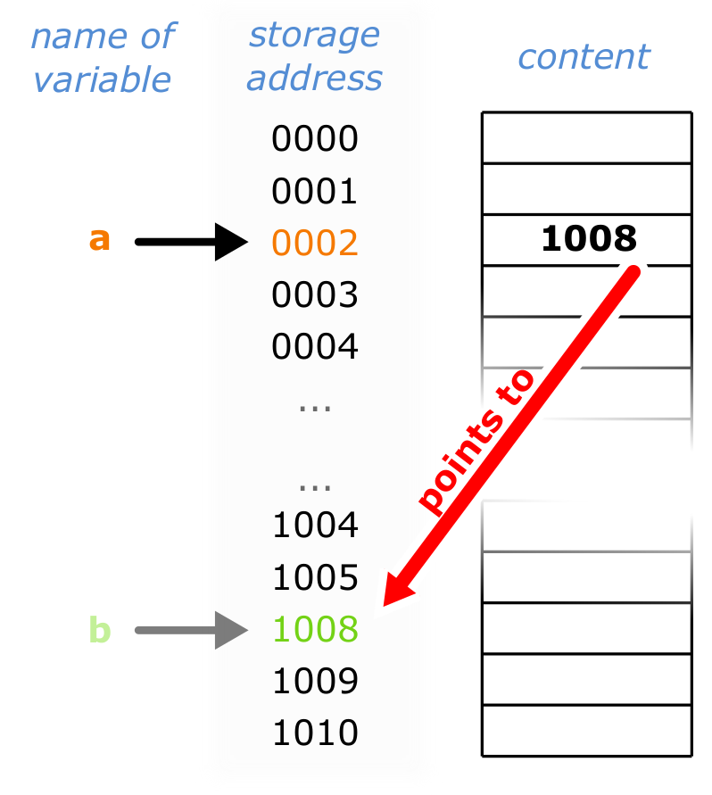

Introduction
What is a pointer?

A pointer is an object whose value “points to” another value stored somewhere else in memory
it contains a memory address
obtaining the stored at the pointed location
very flexible and powerful tool
Using a pointer
/* Defining a pointer */
int* a; // declares a pointer that can point to an integer value
//DANGER: the pointer points to a random memory portion!
int* b = nullptr; // OK, pointer is initialised to a null memory address
int* c = new int; // allocate memory for an integer value in the heap
//and assign its memory address to this pointer
int** d = &a; // this pointer points to a pointer to an integer value
MyObject* e = new MyObject(); // allocate memory for MyObject
// and assign its memory address to the pointer e
/* Using a pointer */
int f = *c; // dereferencing a pointer and assigning the pointed
// value to another integer variable
e->DoSomething(); // dereferencing a pointer and calling
// the method DoSomething() of the instance of MyObject
// pointed by e
Why a raw pointer is hard to love
Memory leaks
What is the problem with this code?
Below is a snippet of analysis code. What is wrong with it ?
void MyAnalysisTask::UserExec()
{
TLorentzVector* v = nullptr;
for (int i = 0; i < InputEvent()->GetNumberOfTracks(); i++) {
AliVTrack* track = InputEvent()->GetTrack(i);
if (!track) continue;
v = new TLorentzVector(track->Px(),
track->Py(), track->Pz(), track->M());
// my analysis here
std::cout << v->Pt() << std::endl;
}
delete v;
}
SolutionClick to expand
Smart Pointers
Clear (shared or exclusive) ownership of the pointed object
memory is deallocated when the last pointer goes out of scope
Available since C++11
Exclusive-Ownership Pointers: unique_ptr
Automatic garbage collection with (i.e. it uses the same resources as a raw pointer)
unique_ptrowns the object it pointsMemory automatically released when
unique_ptrgoes out of scope or when itsreset(T* ptr)method is calledOnly one
unique_ptrcan point to the same memory address
Unique pointers in the wild
Example 1
void MyFunction() {
std::unique_ptr<TLorentzVector> vector(new TLorentzVector(0,0,0,0));
std::unique_ptr<TLorentzVector> vector2(new TLorentzVector(0,0,0,0));
// use vector and vector2
// dereferencing unique_ptr works exactly as a raw pointer
std::cout << vector->Pt() << std::endl;
// the line below does not compile!
// vector = vector2;
// cannot assign the same address to two unique_ptr instances
vector.swap(vector2); // however I can swap the memory addresses
// this also releases the memory previously pointed by vector2
vector2.reset(new TLorentzVector(0,0,0,0));
// objects pointed by vector and vector2 are deleted here
}
Example 2
void MyAnalysisTask::UserExec()
{
for (int i = 0; i < InputEvent()->GetNumberOfTracks(); i++) {
AliVTrack* track = InputEvent()->GetTrack(i);
if (!track) continue;
std::unique_ptr<TLorentzVector> v(new TLorentzVector(track->Px(),
track->Py(), track->Pz(), track->M()));
// my analysis here
std::cout << v->Pt() << std::endl;
// no need to delete
// v is automatically deallocated after each for loop
}
}
No memory leak here! :)
Shared-Ownership Pointers: shared_ptr
Automatic garbage collection with some CPU and memory overhead
The pointed object is collectively owned by one or more
shared_ptrinstancesMemory automatically released the last
shared_ptrgoes out of scope or when it is re-assigned
![SharedPtr]{Sharedptr.png}
Shared pointers in the wild
Example 1
void MyFunction() {
std::shared_ptr<TLorentzVector> vector(new TLorentzVector(0,0,0,0));
std::shared_ptr<TLorentzVector> vector2(new TLorentzVector(0,0,0,0));
// dereferencing shared_ptr works exactly as a raw pointer
std::cout << vector->Pt() << std::endl;
// assignment is allowed between shared_ptr instances
vector = vector2;
// the object previously pointed by vector is deleted!
// vector and vector2 now share the ownership of the same object
// object pointed by both vector and vector2 is deleted here
}
Example 2
class MyClass {
public:
MyClass();
private:
void MyFunction();
std::shared_ptr<TLorentzVector> fVector;
};
void MyClass::MyFunction() {
std::shared_ptr<TLorentzVector> vector(new TLorentzVector(0,0,0,0));
// assignment is allowed between shared_ptr instances
fVector = vector;
// the object previously pointed by fVector (if any) is deleted
// vector and fVector now share the ownership of the same object
// here vector goes out-of-scope
// however fVector is a class member so the object is not deleted!
// it will be deleted automatically when this instance of the class
// is deleted (and therefore fVector goes out-of-scope) :)
}
Some word of caution on `shared_ptr'
What is the problem in this case?
You have crated smart code, using smart pointers. It looks like this
void MyClass::MyFunction() {
auto ptr = new TLorentzVector(0,0,0,0);
std::shared_ptr<TLorentzVector> v1 (ptr);
std::shared_ptr<TLorentzVector> v2 (ptr);
// a double delete occurs here!
}
still, something is wrong with it, do you know what ?
SolutionClick to expand
Usage Notes for ALICE Software
- (therefore cannot be used as non-transient class members)\
``` {style="base" gobble="4"}
#if !(defined(__CINT__) || defined(__MAKECINT__)) // your C++11 code goes here #endif```
Conclusions
Final remarks
When the extra-flexibility of a pointer is not needed, do not use it
Alternative to pointers: arguments by reference (not covered here)
Avoid raw pointers whenever possible!
Smart pointers (
unique_ptrandshared_ptr) should cover most use cases and provide a much more robust and safe memory management